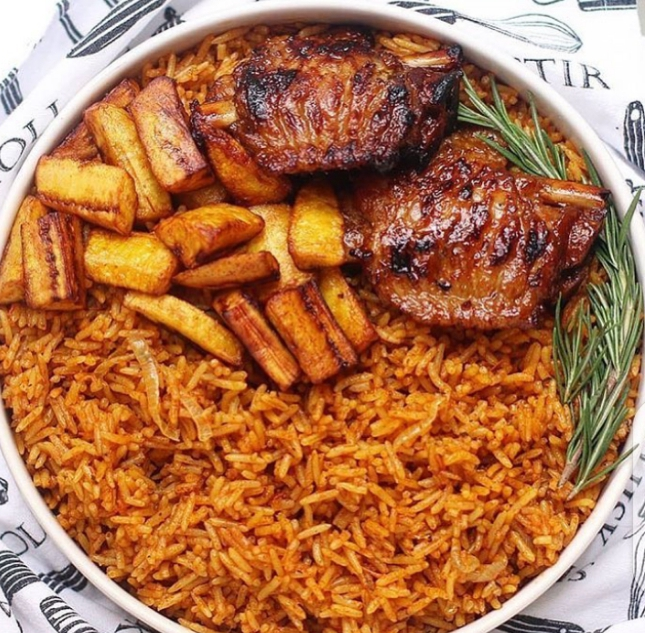

Nigerian Jollof Rice

Description
Making a rice dish that is cooked in tomato and pepper puree. Boiled with chicken or beef broth.
Served with a side of meat and fried plantains
Ingredients needed
- Rice
- Chicken or beef broth (Vegetable broth for vegans)
- Any meat of your choice
- Unripe plantains
- Oil or unsalted butter
- Bell peppers
- Tomato paste
- Onions
- Spices such as thyme, rosemary, salt, bay leaves, chicken or beef bouillon etc.
Steps / Procedures
- Put oil or butter in a pot on medium high heat and dice your onions. Once oil is hot, put it into the pot to fry till translucent
- While you're onion is frying, measure 3 cups of your selected rice and rinse with warm water
- Once the onions have fried, include your blended peppers and tomato puree to the pot and allow it to fry to remove the raw tomato taste or until a dark red colour
- Once the tomatoes have changed to a dark red colour, include your spices of your choice
- Then pour your meat or vegetable broth into the well seasoned tomato paste. Let it boil for 15 minutes before going to the next step
- As this is going on, you can prepare your meat.You can decide to season your meat and airfry or boil it and airfry it. It's left to you on how you would like your meat
- Once the 15 minute timer is up, you put in your washed rice in the pot and cover to cook
- After 30 minutes, check the rice in the pan to see if it's fluffy or soft. If soft, remove the pot from heat and leave to cool.
- Once the rice is ready, you can slice your plantains into thin slices at an angle. Sprinkle salt on the slices when you're done slicing them
- In a deep frying pan, put 9 cups of oil to deep fry the plantains
- Start plating the rice with your meat or its substitue and also your fried plantains. Serve with a chilled drink
Enjoy!